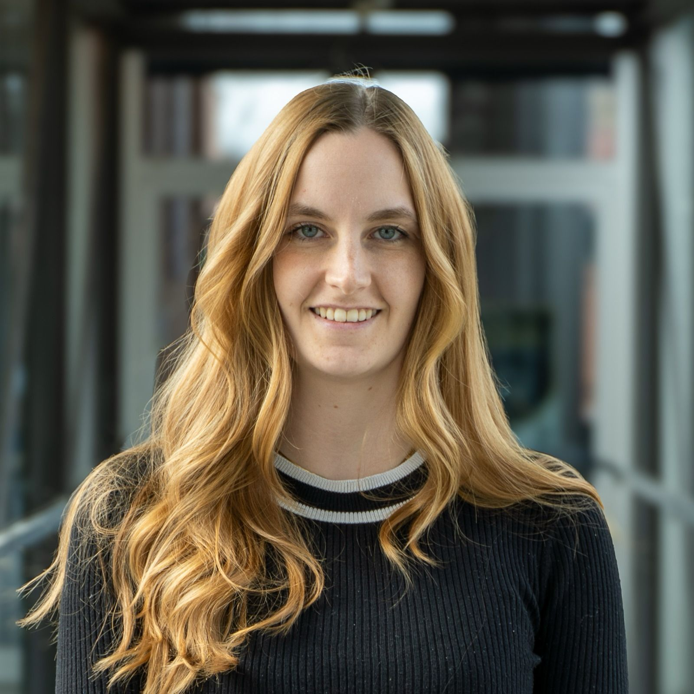

Multimediale Medienproduktion mit Fokus auf Podcast und Storytelling. Ich konzipiere, recherchiere, hoste und schneide, sodass am Ende eine Geschichte steht, die wirklich jemand hören will.
Podcast · Video · Social MediaMaster Multimediale MedienproduktionAktuell beim BR

Schön, dass du hier bist
Werdegang
Vom Abi-Zeugnis zur Audio-Redaktion.
04/2026 - 09/2026 · aktuell
Werkstudentin bei Bayern 3
Bayerischer Rundfunk, München
Mitarbeit bei Audio- und Video-Produktion
Produktion und Post-Produktion von Social Media Beiträgen.
Parallel: Masterarbeit über Chancen und Grenzen einer KI-Persona als Podcast-Host und im Radio-Programm
11/2025 - 01/2026
Praktikum bei Bayern 3 und Bayern 1
Bayerischer Rundfunk, München
Einblicke in die Audio- und Videoproduktion von Bayern 1 und Bayern 3 sowie aktive Mitarbeit an laufenden Projekten
Kennenlernen und Anwenden gängiger Produktionssoftware
Social-Media-Betreuung bei Großevents wie dem „BR Mitsingkonzert“ in Ingolstadt, „Night of the Proms“ und „BR Sternstunden“
07/2025 - 09/2025
Praktikum in der Redaktion bei Wakeword
Wake Word Studios, München
Tiefen-Recherche über Biografien für den Podcast “Mensch!“ und Zusammenfassung in Recherchedossiers sowie Erstellung vollständiger Podcastskripts
Erstellung für Recherchedossiers für den Wissenschaftspodcast „Substance“
Entwicklung und Umsetzung von Social Mieda-Kampagnen für die Podcasts „Mensch!“ und „Ritter, Tod und Teufel“ inklusive Ideenentwicklung, Konzeption, Dreh und Schnitt von Reels sowie die Erstellung von Vorlagen für Social Media-Posts
Design eines Pitches für einen wissenschaftlichen Klima-Podcast
09/2024 - heute
Master of Arts - Multimediale Medienproduktion
Hochschule Ansbach
Aufbau des Audio-Bereichs und Produktion von zwei Podcast-Staffeln für das Kulturportal Bayern
Mehrere Video-Projekte für YouTube
Regelmäßige Instagram-Formate
02/2025 - 06/2025
Werkstudentin
Loderwerk, München
Redaktionsplan für multimediale Marketingkampagne
Gestaltung von Präsentationen und Print-Materialien
05/2021 - 04/2024
Aufnahmeleitung
Neumeister Media, Konstanz
Organisation und Leitung von Video-Produktionen in zweiter Instanz
Workshops zu Kamera, Ton, Licht und Produktion
Entwicklung und Umsetzung von Marketingkonzepten
10/2019 - 08/2024
Bachelor of Arts - Literatur-, Kunst-, und Medienwissenschaften
Universität Konstanz · Abschluss 1,5
Bachelorarbeit „Podcast als journalistisches Medium - Potenziale und Grenzen für die Aufbereitung und Darstellung gesellschaftlicher Bewegungen" mit Note 1,3
07/2017 - 04/2019
Work & Travel
Süd-Ost-Asien
Erste Berufserfahrungen und eigenständige Reise
07/2017
Abitur
Edith-Stein Gymnasium
Arbeitsproben
Eine Auswahl an Projekten, die bereits veröffentlicht sind.